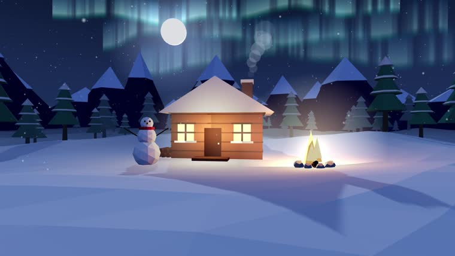

Tired of asking for just a new outfit and getting a different character? In this free kit, Claude writes an artist in code (what the kit calls the engine) that knows how to draw one style, and a short sheet for the scene: who appears, where, what time, and what they do. For a new film, you change the sheet and the artist stays the same, so the face doesn’t change. It’s for anyone who wants to make an animated film without knowing how to program. You can get started on Claude's website, without installing anything, or with Claude Code (or Codex) on a regular computer, without a graphics card.
From a lottery to a repeatable recipe
A video generator makes everything up from scratch with every attempt. Here, the artist is a program you approved, and it always draws the same way.
😩 With a video generator
- Every attempt is a lottery: you ask for the same thing and get something different.
- The character’s face changes from one shot to the next.
- The clip is short, and every new attempt uses up credits.
😌 With one engine per style
- The same sheet with the same artist produces the same video, frame by frame.
- You change the outfit, place, or time of day, and the face stays the same.
- No 30-second limit: a long film is several short films joined together afterward.


The same Lia, with the same face: the artist is the same; only the sheet changed. Both frames came from the kit’s sample films.
🎭 The same face throughout the series
The character you approved looks the same in every episode because the same code draws it.
✏️ Change only what you ask for
“Slower,” “warmer light”: the change goes to that specific part, and the rest of the film stays as it was.
💻 No graphics card
The film is assembled on your computer using only the processor. Making the film doesn’t use credits from any service.
How this changes your day
You don't need to code to feel the difference. Here are three common situations for people making animated videos with AI.
📺 A series with a recurring character
Today: the character looks different in every episode, and viewers notice.
With the kit: the same artist appears in every episode. A new episode means a new sheet.
🏖️ Change only the setting
Today: you ask "now at the beach" and get a different woman, different hair, different style.
With the kit: Lia went from the hill to the beach by changing only the sheet, as you saw above.
🎚️ Adjust a detail
Today: asking for "a little slower" means starting over, and everything changes along with it.
With the kit: you say what you want to change, and only that changes.
- First conversation · you choose the style
Claude writes the artist and shows you 3 separate frames to review before the full film. - You approve · the film is made on your computer
A 10-second film was ready in less than a minute on the test computer. - The following week · a new film
You open another conversation and ask for just a new sheet. The artist is already ready.
Understand it in just a few minutes
An artist and a sheet
Think of a studio artist who knows only one style, and knows it very well. You give them a short sheet, and they draw the scene. New sheet, new scene, same style.
✍️ The artist (the engine)
Claude writes a program once that knows how to draw one style: the character’s face, the linework, the colors, and the way they move. That’s the big part of the work.
📋 The sheet
A short text with what changes from one film to another: who, where, what time, what clothes, what they do. In Lia’s example, the sheet is about 70 times smaller than the artist.
The sound is also made in code, at the same time as the image: footsteps, wind, and music play the moment they appear.
The 4 ways to animate
Each way is a type of artist. Choosing the right one before you ask is half the work, and AI helps you choose.

Flat shapes in layers, like cut paper; the background moves less than the foreground. The easiest to get right.
The background is painted once and the character acts in front of it. Good for a character with a face that appears in several films.

A small 3D world with light and shadow, with the camera moving through it. Good for places and journeys.

A finished drawing comes to life by moving just a few parts: clothes on the line, hair, a cat’s tail.
📚 Style recipes in Portuguese
The kit includes 31 "same style, your idea" recipes, divided among the 4 ways to animate: 12 paper cut-outs, 6 stages with a painted backdrop, 10 models with a camera, and 3 puppets. Choose a style, write your idea in one or two sentences (who, where, what happens), and send it. Only the 4 styles above have a ready-to-use, tested artist; the others are recipes you can use to ask for your own.
What the method doesn’t promise
🚫 It doesn’t work well for
- Real people or a filmed look: the code draws shapes, not real skin or fabric.
- An actor’s face or a realistic human face. Stylized faces with big eyes and few lines work.
- Fighting, dancing, or sports: each pose needs to be taught to the artist.
- Lips synced to speech.
🔀 The hybrid approach
When you want a filmed finish, the film made with code becomes the blueprint: it decides the camera, timing, and character, and a video generator adds texture on top.
You get a polished finish and lose the guarantee that it will look the same every time. The generator is paid, and the kit only explains this approach: it hasn’t been tested here.
💰 Where the cost comes from
Making the film on your computer doesn’t use credits. The real cost is the conversation with Claude, and it depends on your plan. To spend less:
- Reuse the artist: creating one is expensive; changing the sheet is cheap.
- Start a new conversation for each film.
- Ask for fewer review rounds for simple styles.
- Review a small draft and start with films that are 5 to 10 seconds long.
Ask your AI to analyze the kit
You don’t need to install anything by hand or understand the files. The AI reads the kit, listens to your idea, and tells you what can be done.
0. Choose where to start
🌐 Without a terminal, on Claude's website
- On Claude's website or in the app, open Settings and turn on file creation and code execution.
- Start a new conversation.
- On the kit's recipes page, copy a style recipe and the rules block on the same page. Replace [SUA IDEIA AQUI] with your idea.
- Paste everything into the conversation and download the MP4 Claude gives you.
💻 With Claude Code or Codex
Claude Code is Claude working in a folder on your computer: it reads, creates, and runs the kit's files right there. It requires a paid Claude plan and can be downloaded from claude.com/claude-code. Codex is OpenAI's equivalent. For this option, follow steps 1 to 3 below.
1. Open your AI
Claude Code or Codex, open in a folder on your computer.
2. Paste the prompt below
Replace the part in brackets with your character. The AI reads the kit and explains in plain English, without changing anything yet.
3. Say yes to what makes sense
It shows you the plan. You approve it, it prepares the kit, and shows you the first frames.
Read the "filme-em-codigo" kit at https://github.com/inematds/filme-em-codigo (the technical instructions page, the README, explains everything, including installation). I want an animated film with this character: [describe who they are, where they are, what time it is, and what they do]. Before doing anything, answer me in plain English: 1. Which of the 4 ways to animate best fits my idea, and why? 2. What does my computer need to make the film? 3. What won’t the method be able to do with my idea? Don’t install or create anything yet. Show me the plan and wait for me to say yes.
🛠️ Are you technical and prefer to install it by hand?
The steps with the commands, what needs to be installed, and the tests are on the kit's technical instructions page on GitHub (the site where the kit is stored).
We measured it for real, without a graphics card
The kit’s four sample films were made on this computer and measured one by one: 10 seconds of film each, at YouTube quality (1080p).
paper cutout
anime style, painted scenery
3D model
puppet

Measured on 11/19/2026 on a computer without a graphics card: each film used an average of about 3 processor cores (the 3D scene needs more, almost 11). The four films were ready in 25 to 45 seconds each. It takes longer on a simpler computer, and "same film, same frames" was checked on the same computer and in the same browser.
The open tools behind it
The kit relies on free, open tools made by communities. Two of them work inside the kit; the others follow the same idea and help you go further.
🧊 three.js
Draws 3D worlds in your browser. It builds the model of the cabin in the snow.
🎞️ FFmpeg
Combines the frames and sound into a video file. It's the last step in every film made with the kit.
⚛️ Remotion
Makes videos by writing web pages: each frame is calculated from its number, just like in the kit.
📐 Manim
Animates shapes and equations with precision; it started out for math videos. This is the version maintained by the community.
✏️ rough.js
Gives drawings a hand-drawn look, with scribbles and hatching. It works well with paper cut-outs.
🎬 HyperFrames
Turns a web page into a video, with a timeline and editing ready to go. It can be used instead of the kit's editing tools.
See all 26 references, with what each one does and its license.
Go further
Other free kits from INEMA.CLUB for making videos with code.
🎙️ video-codigo
Video made with code, using local voice narration, with images tied to the spoken words.
⏱️ sincronia-em-codigo
Images, counter, and sound moving together on the same clock, with entire series generated from a spreadsheet.
Before you start
Do I need to know how to code?
No. You describe the character and the scene, look at the frames the AI shows you, and say what to change. Claude writes the code.
Do I need a graphics card?
No. The examples were made using only the processor. 3D is the slowest, and even so, the 10-second film took less than a minute on the test computer.
How much does it cost?
The kit and this guide are free. Making the film on your computer doesn't use up any credits. The only cost is the conversation with the AI you already use, and that depends on your plan.
Can the film be long?
Yes. The way that works is to make several short films with the same artist and join them later. Asking for one long film all at once makes the conversation expensive, and the AI loses track.
Can I use my own drawing?
Yes, in two ways. The “with your reference” prompt has Claude study your image and redraw it in code, with the parts already able to move. The “rag doll” approach uses a drawing whose parts (arm, hair, clothes) are already separate; a photo or an ordinary JPG isn’t enough, and Claude separates the parts when prompted.
Does it work for real people?
No. The method is strongest with styles: paper, anime, miniature, puppet. For a filmed look, use the hybrid approach, with the film made from code as a blueprint.
Does it work with Codex?
The kit was designed for Claude Code, but Codex can also read the kit and tell you whether it works for your idea.
Will it work on my computer?
This was measured on one computer without a graphics card. The film takes longer on a simpler computer. Windows and Mac were not tested; the AI checks what yours needs during the analysis.
What about you: which character would you put in an entire series with the same look? The kit is free on inema.club, right on the internet.